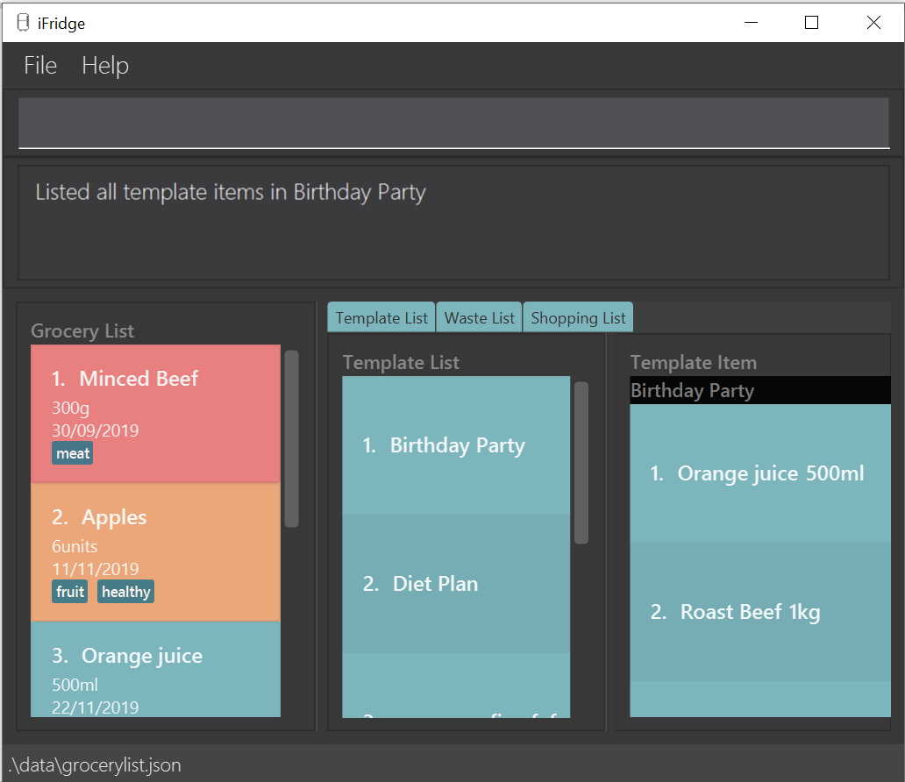

By: Team SE-EDU Since: Jun 2016 Licence: MIT
- 1. Introduction
- 2. Quick Start
- 3. Features
- 3.1. Viewing help :
help - 3.2. System Management
- 3.3. Grocery List Management
- 3.4. Viewing Grocery List
- 3.5. Waste List Management
- 3.5.1. Moving an item into waste list
- 3.5.2. Moving all expired food items from grocery list to waste list
- 3.5.3. Viewing the waste list:
wlist - 3.5.4. Displaying food wastage statistics:
wlist report - 3.5.5. Obtain feedback based on current food wastage:
wlist feedback - 3.5.6. View most commonly wasted food items:
wlist food
- 3.6. Templates List Management
- 3.7. Template Management
- 3.8. Shopping List Management
- 3.9. Exiting the program :
exit - 3.10. Saving the data
- 3.1. Viewing help :
- 4. FAQ
- 5. Command Summary
1. Introduction
AddressBook Level 3 (AB3) is for those who prefer to use a desktop app for managing contacts. More importantly, AB3 is optimized for those who prefer to work with a Command Line Interface (CLI) while still having the benefits of a Graphical User Interface (GUI). If you can type fast, AB3 can get your contact management tasks done faster than traditional GUI apps. Interested? Jump to the Section 2, “Quick Start” to get started. Enjoy!
2. Quick Start
-
Ensure you have Java
11or above installed in your Computer. -
Download the latest
iFridge.jarhere. -
Copy the file to the folder you want to use as the home folder for your Address Book.
-
Double-click the file to start the app. The GUI should appear in a few seconds.
 -
Type the command in the command box and press Enter to execute it.
e.g. typinghelpand pressing Enter will open the help window. -
Some example commands you can try:
-
list: lists all food items in your grocery list -
addadd n/milk e/23/10/2019 a/1000 u/ml: adds the food itemmilkto the iFridge application. -
delete3: deletes the 3rd contact shown in the current list -
exit: exits the app
-
-
Refer to Section 3, “Features” for details of each command.
3. Features
Command Format
-
Words in
UPPER_CASEare the parameters to be supplied by the user e.g. inadd n/ITEM_NAME,ITEM_NAMEis a parameter which can be used asadd n/apple. -
Items in square brackets are optional e.g
n/NAME [t/TAG]can be used asn/apple t/fruitor asn/apple. -
Items with … after them can be used multiple times including zero times e.g.
[t/TAG]…can be used as ` ` (i.e. 0 times),t/fruit,t/fruit t/healthyetc. -
Parameters can be in any order e.g. if the command specifies
n/ITEM_NAME e/EXPIRY_DATE,e/EXPIRY_DATE n/ITEM_NAMEis also acceptable.
3.1. Viewing help : help
Format: help
3.2. System Management
3.2.1. Loading the file
Upon launching the app, existing lists will be automatically loaded into their respective lists.
3.2.2. Saving the file
Upon exiting the app, updated lists will be automatically saved.
3.2.3. Checking reminders on expiry dates
Display list with all food expiring within n days.
rem n/NUMBER_OF_DAYS
Change default number of days which food is expiring in, to be displayed at the start of the app every time the app is launched.
remDefault n/NUMBER_OF_DAYS
Examples:
-
rem n/3 -
remDefault n/3
Upon launching the app, list of food expiring within (default; 3 days if not yet specified) is displayed.
3.2.4. Sort settings
Supports sorting of list displayed by alphabetical order first, or expiry date first.
sort by/TYPE - displays list with the specified sorting method first.
sortDefault by/TYPE - change default sorting method when list method is called every time the app is launched.
Examples:
-
sort by/alphabetical -
sortDefault by/expiry
For food with the same name, it will be automatically sorted by their expiry dates. For food with the same expiry dates, it will be automatically sorted by their alphabetical order. For same name and same expiry dates, it will be displayed based on the order they are added into the grocery list.
3.2.5. Display settings
display merged - display grocery list of food objects, where food objects with the same name and expiry dates are merged.
3.2.6. Waste list clearing
Clearing of waste list is done automatically at the start of every month.
3.3. Grocery List Management
3.3.1. Adding a food item
Format: add n/ITEM_NAME e/EXPIRY_DATE a/AMOUNT u/UNIT [t/TAG]
Adds a food item to the grocery list
3.3.3. Deleting a food item (Throw away)
Format: delete INDEX
Deletes the specified food item from the grocery list when it is done being used If the amount of the food item left > 0, the item will be moved to the waste list
3.3.4. Tagging a food item
Format: tag INDEX t/TAG
Adds a tag to the specified food item in the grocery list
3.3.5. Remove a tag from an item
Format: remove INDEX t/TAG
Removes the specified tag from the specified food item from the grocery list
3.3.6. Use an item (Subtract by the amount)
Format: use INDEX a/AMOUNT
Decreases the amount left of the item by the specified amount.
3.3.7. Edit an item
Format: edit INDEX [n/ITEM_NAME] [e/EXPIRY_DATE] [a/AMOUNT]
Edits an item based on the arguments provided
3.4. Viewing Grocery List
3.4.1. Sort the grocery list
Format: sort by/TYPE
Sorts the grocery list based on the type of sorting The type of sorting is as follows:
Examples:
-
sort by/alphabetical -
sort by/expiry
3.4.2. Filter
Format: filter t/TAG
From the grocery list, returns a list of food items with the specified tag
3.4.3. Find an item
Format: find STRING
Returns a list of items, of which the items contain the input string
3.5. Waste List Management
3.5.1. Moving an item into waste list
When you delete an item from your grocery list using delete, the item will automatically be
moved into the waste list if it has not been fully used (the amount of food remaining > 0).
3.5.2. Moving all expired food items from grocery list to waste list
By default, every time the application is launched, Food Orchestra helps you check which items are expired and automatically moves them into the waste list.
3.5.3. Viewing the waste list: wlist
Shows a list of the food items which have been wasted
Format: wlist [m/MONTH_OF_YEAR]
Examples:
-
wlist -
wlist m/022019
3.5.4. Displaying food wastage statistics: wlist report
Shows a charted report detailing your food wastage statistics across a time frame.
Format: wlist report [sd/START_DATE] [ed/END_DATE]
Examples:
-
wlist report sd/3 Mar 2019 -
wlist report sd/3 Mar 2019 ed/4 Oct 2019
The allowable date formats can be found in the Natty library documentation.
3.5.5. Obtain feedback based on current food wastage: wlist feedback
Format: wlist feedback
3.5.6. View most commonly wasted food items: wlist food
Format: wlist food
Generates a word cloud based on user’s most commonly wasted food.
3.6. Templates List Management
3.6.1. Add new template: 'tlist add'
Adds a new template into template list.
Format: 'tlist add n/TEMPLATENAME'
Examples:
-
tlist add n/Weekly Necessities -
tlist add n/Birthday Party Prep -
tlist add n/Cake-Making
3.6.2. Rename template: tlist rename
Updates name of specified template in template list.
Format: tlist rename INDEX n/TEMPLATENAME
Examples:
-
tlist rename 1 n/Daily NecessitiesEdits the name of the 1st template in the template list toDaily Necessities
3.6.3. Deleting a template: tlist delete
Deletes a specified template from the template list.
Format: tlist delete INDEX
Examples:
-
tlist delete 1Deletes the 1st template in the template list
3.6.4. Clear template list: tlist clear
Clears all template entries from the template list.
Format: tlist clear
3.6.5. Show list of all templates: tlist all
Shows all entries in the template list
Format: tlist all
3.7. Template Management
3.7.1. Add new grocery item: tlist n/TEMPLATENAME add
Adds an item into a specified template.+
Format: tlist n/TEMPLATENAME add f/FOODITEM a/AMOUNT
Examples:
-
tlist n/Weekly Necessities add n/Milk a/1l -
tlist n/Weekly Necessities add n/Eggs a/12
3.7.2. Edit item name: tlist edit
Edits a specified item in the specified template TEMPLATENAME.
Format: tlist n/TEMPLATENAME edit INDEX [f/FOODITEM] [a/AMOUNT]
Examples:
-
tlist n/Weekly Necessities edit 1 f/Low-Fat MilkEdits the name of the first food item in the templateWeekly NecessitiestoLow-Fat Milk -
tlist n/Weekly Necessities edit 1 a/2lEdits the amount of the first food item in the templateWeekly Necessitiesto 2 litres.
3.7.3. Delete food item: tlist n/TEMPLATENAME delete
Deletes the specified item from the specified template.
Format: tlist n/TEMPLATENAME delete INDEX
Examples:
-
tlist n/Weekly Necessities delete 1Deletes the first food item in the templateWeekly Necessities
3.7.4. Shows template: tlist n/TEMPLATENAME
Shows all entries in the specified template.
Format: tlist n/TEMPLATENAME
Examples:
-
tlist n/Weekly NecessitiesShows all entries in theWeekly Necessitiestemplate
3.8. Shopping List Management
3.8.1. Generate shopping list: slist addAll
Generates a shopping list from all missing grocery items in the template.
Format: slist addAll [l/TEMPLATENAME] …
Examples:
* slist addAll l/Weekly Necessities l/Birthday Cake
All entries from the templates Weekly Necessities and Birthday Cake will be added into the shopping list.
3.9. Exiting the program : exit
Exits the program.
Format: exit
3.10. Saving the data
iFridge data are saved in the hard disk automatically after any command that changes the data.
There is no need to save manually.
4. FAQ
Q: How do I transfer my data to another Computer?
A: Install the app in the other computer and overwrite the empty data file it creates with the file that contains the data of your previous Address Book folder.
5. Command Summary
-
Add
add n/NAME p/PHONE_NUMBER e/EMAIL a/ADDRESS [t/TAG]…
e.g.add n/James Ho p/22224444 e/jamesho@example.com a/123, Clementi Rd, 1234665 t/friend t/colleague -
Clear :
clear -
Delete :
delete INDEX
e.g.delete 3 -
Edit :
edit INDEX [n/NAME] [p/PHONE_NUMBER] [e/EMAIL] [a/ADDRESS] [t/TAG]…
e.g.edit 2 n/James Lee e/jameslee@example.com -
Find :
find KEYWORD [MORE_KEYWORDS]
e.g.find James Jake -
List :
list -
Help :
help